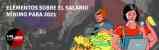

Upcoming EventsNo upcoming events.
|
france / belgique / luxembourg / mouvement anarchiste / communiqué de presse Wednesday December 30, 2020 01:31 bySerge
Décès d’Alexandre Skirda, historien et militant anarchiste Décès d’Alexandre Skirda, historien et militant anarchisteLien permanent : https://monde-libertaire.net/index.php?articlen=5339 À la suite d’une longue maladie, mercredi 23 décembre notre ami, notre compagnon Alexandre Skirda nous a quittés à l’âge de 78 ans. Est-il allé sur les rives du Dniepr rejoindre Nestor Makhno, descendant de Cosaques zaporogues comme lui ? Son intérêt pour cette région et sa connaissance de la langue lui avaient permis de connaître le mouvement révolutionnaire paysan du sud de l’Ukraine, héritier de plusieurs siècles de pratique de la démocratie directe. Dans des livres tel Nestor Makhno, le cosaque libertaire, la lutte pour les soviets libres en Ukraine 1917-1921, il montre comment dans cette période la création de communes libres visait à établir une société sans État, puis la façon dont l’État bolchevik les a détruites, après avoir éliminé l’Armée révolutionnaire insurrectionnelle ukrainienne, qui avait pourtant permis de vaincre les armées blanches. Encore aujourd’hui le nom d’Alexandre Skirda fait frémir la majorité des militants trotskistes, qui ne lui pardonnent pas d’avoir révélé la manière dont l’armée rouge, envoyée par Trotski, avait écrasé la Commune de Kronstadt, qui souhaitait pour la Russie une démocratie directe, fédéraliste, et déclarait le 8 mars 1921 : « C’est ici à Kronstadt qu’est posée la première pierre de la IIIe Révolution opposée à l’ordre bureaucratique des bolcheviks, laissant derrière la dictature du Parti communiste, des tchékas et du capitalisme d’État ». En publiant Kronstadt 1921: soviets libres contre dictature de parti, il exauçait longtemps après le souhait de Stépan Pétrichenko, président du Comité révolutionnaire provisoire de Kronstadt : « Ils peuvent fusiller les Kronstadiens, mais ils ne pourront jamais fusiller la vérité de Kronstadt ». Ses recherches lui ont permis d’écrire plusieurs livres sur cet événement historique, qui ont été l’objet de traductions dans divers pays et de nombreuses rééditions, enrichies par de nouveaux documents. Il a récemment traduit et présenté Kronstadt dans la révolution russe d’Efim Yartchouk, inédit jusque-là. Celui-ci, un des principaux animateurs des anarchistes de Kronstadt, décrit ce qu’il a vécu et dédie son ouvrage « à ceux qui versèrent leur sang lors de la révolution de 1905 pour l’émancipation complète du prolétariat du joug du capital et de l’autorité. À ceux qui luttèrent en février et en juillet 1917 contre les maîtres du monde. À ceux qui s’étant laissé abuser par les slogans de l’État prolétarien levèrent bientôt les armes contre les nouveaux maîtres, les bolcheviks. À la mémoire de ceux qui périrent sur la route menant à la Société des hommes libres : l’anarchie ». Ayant eu l’occasion d’approcher la montagne de documents alimentant ses livres, ceux évoqués ici n’en étant qu’une partie, nous avons pu mesurer l’importance de son travail historique pour révéler ce qui a été longtemps occulté – aussi bien par les « blancs » que par les « rouges » – sur une révolution qui a eu des conséquences, pendant des dizaines d’années, sur le mouvement ouvrier de nombreux pays. Nous n’oublierons pas Alexandre Skirda, l’historien incontournable de la révolution russe, et aussi le militant anarchiste qui, dès les années 1960, animait le Groupe d’études et action anarchiste. « Les morts vivent et avec eux, les rêves qui les ont portés » Gustav Landauer.
Διεθνή / Αναρχική Ιστορία / Γνώμη / Ανάλυση Monday December 28, 2020 18:42 byRuth Kinna
Δεν αποτελεί έκπληξη το γεγονός ότι ο αναρχικός θεωρητικός Πιότρ Κροπότκιν ενδιαφέρθηκε για τα Χριστούγεννα. Στη ρωσική κουλτούρα, ο Άγιος Νικόλαος [Άγιος Βασίλης] (Николай Чудотворец) ήταν αγαπητός ως υπερασπιστής των καταπιεσμένων, των αδυνάτων και των μειονεκτούντων. Ο Κροπότκιν μοιραζόταν αυτά τα συναισθήματα. Αλλά υπήρχε και ένας οικογενειακός δεσμός μεταξύ τους. Κροπότκιν: η σχέση του με τα Χριστούγεννα και τον Άγιο Νικόλαο (1)Ruth Kinna [i] Δεν αποτελεί έκπληξη το γεγονός ότι ο αναρχικός θεωρητικός Πιότρ Κροπότκιν ενδιαφέρθηκε για τα Χριστούγεννα. Στη ρωσική κουλτούρα, ο Άγιος Νικόλαος [Άγιος Βασίλης] (Николай Чудотворец) ήταν αγαπητός ως υπερασπιστής των καταπιεσμένων, των αδυνάτων και των μειονεκτούντων. Ο Κροπότκιν μοιραζόταν αυτά τα συναισθήματα. Αλλά υπήρχε και ένας οικογενειακός δεσμός μεταξύ τους. Όπως όλοι γνωρίζουν, ο Κροπότκιν εντόπιζε την καταγωγή του στην αρχαία δυναστεία των Ρούρικ που κυβέρνησαν τη Ρωσία πριν από την άνοδο των Ρομανόφ και οι οποίοι, από τον 1ο αιώνα μ.Χ., έλεγχαν τις εμπορικές διαδρομές μεταξύ της Μόσχας και της Βυζαντινής Αυτοκρατορίας. Ο συγγενικός κλάδος του Αγίου Νικολάου στην οικογένεια των Ρούρικ είχε την αποστολή να περιπολεί τη Μαύρη Θάλασσα. Αλλά ο Νικόλαος ήταν ένας πνευματικός άνθρωπος και ζήτησε να αποδράσει από την πειρατεία και τη ληστεία για τις οποίες η ρωσική, καταγόμενη από τους Βίκινγκ, οικογένειά του ήταν φημισμένη. Οπότε εγκαταστάθηκε με νέο όνομα στα νότια εδάφη της αυτοκρατορίας, που τώρα ανήκουν στην Ελλάδα, και αποφάσισε να χρησιμοποιήσει τον πλούτο που είχε συγκεντρώσει από τη ζωή του στο έγκλημα ώστε να ανακουφίσει τα βάσανα των φτωχών. Μη δημοσιευμένες αρχειακές πηγές που ανακαλύφθηκαν πρόσφατα στη Μόσχα, αποκαλύπτουν ότι ο Κροπότκιν γοητεύτηκε από αυτόν τον οικογενειακό δεσμό και την εντυπωσιακή φυσική ομοιότητα μεταξύ του ίδιου και της φιγούρας του Πατέρα των Χριστουγέννων, η οποία έγινε δημοφιλής με την έκδοση του «Μία επίσκεψη από τον Άγιο Νικόλαο», περισσότερο γνωστή ως «Η νύχτα των Χριστουγέννων» [ποίημα που δημοσιεύτηκε ανώνυμα και έπειτα αποδόθηκε στον Κλέμεντ Κλαρκ Μουρ], το 1823. Ο Κροπότκιν δεν ήταν τόσο εύσωμος όσο ο Άγιος Βασίλης, αλλά γεμίζοντας τον χιτώνα του με ένα μαξιλάρι, αισθάνθηκε ότι του έμοιαζε. Ο φίλος του, ο Ελιζέ Ρεκλύ, τον συμβούλεψε να βάλει μια γούνα πάνω απ’ τη φορεσιά. Ήταν μια καλή ιδέα, καθώς του επέτρεπε να προσθέσει και λίγο μαύρο στο κόκκινο. Είχε αποφασίσει να ακολουθήσει τη συμβουλή του Ελιζέ για τους ταράνδους επίσης, και να χρησιμοποιήσει ένα χειροκίνητο έλκηθρο. Ο Κροπότκιν κανονικά δεν μασκαρευόταν. Αλλά το να εκμεταλλευτεί την ομοιότητά του για να διαδώσει το αναρχικό μήνυμα ήταν εξαιρετική έμπρακτη προπαγάνδα. Προλαμβάνοντας τον V [από το κόμικ και την ταινία V for Vendetta], ο Κροπότκιν σκέφτηκε ότι θα μπορούσαμε όλοι να ντυθούμε σαν τον Άγιο Βασίλη. Στο περιθώριο μιας σελίδας ο Κροπότκιν έγραψε: «Μπείτε στα καταστήματα, χαρίστε σε όλους τα παιχνίδια!» Αχνά υπολείμματα στο πίσω μέρος μιας κάρτας φέρουν το τετράστιχο: Τη νύχτα των Χριστουγέννων, θα είμαστε όλοι μαζί Ενώ οι άνθρωποι κοιμούνται, θα πραγματοποιήσουμε το χτύπημά μας Θα απαλλοτριώσουμε αγαθά από τα καταστήματα, γιατί αυτό είναι δίκαιο Και θα τα διανείμουμε ευρέως σε όλους όσους χρειάζονται φροντίδα. Οι σημειώσεις του σχεδίου του αποκαλύπτουν επίσης κάποιες πολύτιμες ιδέες του σχετικά με τα αναρχικά χαρακτηριστικά των Χριστουγέννων και τις σκέψεις του για τους τρόπους μετατροπής των βικτωριανών τελετουργιών των Χριστουγέννων. «Όλοι γνωρίζουμε», γράφει, «ότι τα μεγάλα καταστήματα -John Lewis, Harrods και Selfridges- αρχίζουν να εκμεταλλεύονται τις καταναλωτικές δυνατότητες των Χριστουγέννων, δημιουργώντας μαγευτικές σπηλιές και φανταστικούς νεραϊδότοπους για να δελεάσουν τα παιδιά μας και να μας πιέσουν να αγοράσουμε δώρα που δεν θέλουμε και δεν μπορούμε να αντέξουμε». «Αν είστε ένας από εμάς», συνεχίζει, «θα συνειδητοποιήσετε ότι η μαγεία των Χριστουγέννων εξαρτάται από το σύστημα παραγωγής του Πατέρα των Χριστουγέννων, και όχι από τις προσπάθειες των καταστημάτων να σας παρασύρουν στην κατανάλωση άχρηστων προϊόντων». Ο Κροπότκιν περιγράφει τα εργαστήρια που δουλεύουν στον Βόρειο Πόλο, όπου τα ξωτικά εργάζονταν όλο τον χρόνο με χαρά, επειδή γνώριζαν ότι παράγουν για την ευχαρίστηση των άλλων ανθρώπων. Σημειώνοντας ότι αυτά τα εργαστήρια ήταν αυστηρά μη κερδοσκοπικά, βασισμένα στη βιοτεχνία και λειτουργούσαν σε κοινότητες, ο Κροπότκιν τα αντιμετώπιζε ως πρότυπα για τα εργοστάσια του μέλλοντος (που περιγράφονται στο βιβλίο “Fields, Factories and Workshops”). Μερικοί άνθρωποι, ένιωσε, πίστευαν ότι το όνειρο του Πατέρα των Χριστουγέννων, να λάβουν όλοι δώρα την ημέρα των Χριστουγέννων, ήταν ουτοπικό. Αλλά θα μπορούσε να πραγματοποιηθεί. Πράγματι, η επέκταση των εργαστηρίων -τα οποία ήταν αρκετά δαπανηρά στην Αρκτική- θα διευκόλυνε τη γενικευμένη παραγωγή για τις κοινωνικές ανάγκες και τη μετατροπή της περιστασιακής δωρεάς σε τακτική αναδιανομή. «Πρέπει να πούμε στους ανθρώπους», έγραψε ο Κροπότκιν, «ότι κοινοτικά εργαστήρια μπορούν να δημιουργηθούν οπουδήποτε και ότι μπορούμε να συγκεντρώσουμε τους πόρους μας για να βεβαιωθούμε πως ικανοποιούμε τις ανάγκες όλων»! Ένα από τα θέματα που απασχολούσε τον Κροπότκιν περισσότερο, όσον αφορά τα Χριστούγεννα, ήταν ο τρόπος κατά τον οποίο ο εμπνευσμένος ρόλος που έπαιζε ο Νικόλαος στην επινόηση των χριστουγεννιάτικων μύθων συσκότιζε την ηθική των Χριστουγέννων. Ο Νικόλαος παρουσιάστηκε λανθασμένα ως ένας απλά ελεήμονας, αγαθοεργός άνθρωπος: ως άγιος επειδή ήταν φιλάνθρωπος. Αφομοιωμένος από τη φιγούρα του Πατέρα των Χριστουγέννων, τα γενναιόδωρα κίνητρα της προσφοράς του Νικολάου είχαν περαιτέρω διαστρεβλωθεί από την εμμονή των Βικτωριανών με τα παιδιά. Ο Κροπότκιν δεν κατανοούσε ακριβώς τις συνδέσεις, αλλά αισθάνθηκε ότι αντανακλούσαν μια προσπάθεια να ηθικοποιηθεί η παιδική ηλικία μέσα από μια έννοια καθαρότητας που συμβολίστηκε στη γέννηση του Ιησού. Φυσικά δεν μπορούσε να φανταστεί τη μετατροπή του Άγιου Βασίλη σε Μεγάλο Αδελφό, ο οποίος ξέρει πότε τα παιδιά κοιμούνται και ξυπνούν και έρχεται στην πόλη γνωρίζοντας προφανώς ποια έχουν τολμήσει να φωνάξουν ή να σκυθρωπιάσουν. Αλλά αργά ή γρήγορα, προειδοποίησε, αυτή η ιδέα της καθαρότητας θα χρησιμοποιηθεί για να διαχωριστούν τα άτακτα από τα υπάκουα παιδιά, ενώ μόνο όσα ανήκουν στην τελευταία ομάδα θα ανταμείβονταν με δώρα. Σε κάθε περίπτωση, ήταν σημαντικό να ανακτήσουμε τόσο την αρχή της συμπόνιας του Νικολάου από αυτή τη μπερδεμένη μπουρδολογία, όσο και τη λαϊκή προέλευση του Άγιου Βασίλη. Ο Νικόλαος χάριζε δώρα επειδή συνειδητοποίησε με πόνο τα βάσανα των υπόλοιπων ανθρώπων. Αν και δεν ήταν δολοφόνος (απ’ όσο γνώριζε ο Κροπότκιν), μοιραζόταν την ίδια ηθική με τη Σοφία Περόφσκαγια. Και ενώ ήταν προφανώς σημαντικό να ανησυχεί κάποιος για την ευημερία των παιδιών, η αναρχική αρχή ήταν να λαμβάνονται υπ’ όψιν τα βάσανα όλων. Ομοίως, η πρακτική της προσφοράς θεωρήθηκε λανθασμένα ότι απαιτούσε την εφαρμογή ενός κεντρικά κατευθυνόμενου σχεδιασμού, υπό την επίβλεψη ενός παντοδύναμου διαχειριστή. Αυτό ήταν απολύτως λάθος: ο Πατέρας των Χριστουγέννων προήλθε από τη φαντασία του λαού (εξετάστε μόνο το εύρος των τοπικών ονομάτων που είχε συγκεντρώσει ο Άγιος Βασίλης -Santa Claus, Sinterklaas, Tomte, de Kerstman). Και η διάδοση της καλής διάθεσης -μέσα από τη γιορτή- οργανώθηκε από κάτω προς τα πάνω. Θαμμένη κάτω από τα Χριστούγεννα, σύμφωνα με τον Κροπότκιν, ήταν η αλληλέγγυα αρχή της αλληλοβοήθειας. Ο Κροπότκιν εκτίμησε τη σημασία του τελετουργικού και την πραγματική αξία που αποδίδουν τα άτομα και οι κοινότητες στα καρναβάλια, στις πράξεις ενθύμησης και μνήμης. Δεν ήθελε να καταργήσει τα Χριστούγεννα αλλά ούτε ήθελε να τα δει να εκλαϊκεύονται μέσω κάποιας λανθασμένης γραφειοκρατικής ανακατάταξης του ημερολογίου. Ήταν σημαντικό, ωστόσο, να αποσυνδεθεί η ηθική που υποστήριζαν τα Χριστούγεννα από την περιορισμένη ιδιαιτερότητα της γιορτής τους. Η διοργάνωση ενός πάρτι ήταν ακριβώς αυτό, ενώ η επέκταση της αρχής της αλληλοβοήθειας και της συμπόνιας στην καθημερινή ζωή ήταν κάτι άλλο. Στην καπιταλιστική κοινωνία, τα Χριστούγεννα παρείχαν τον χώρο για ειδικές καλές συμπεριφορές. Ενώ μπορούσες να είσαι Χριστιανός μία φορά τον χρόνο, ο αναρχισμός αφορούσε όλη τη ζωή. Ο Κροπότκιν συνειδητοποίησε ότι η προπαγάνδα του θα είχε καλύτερες πιθανότητες επιτυχίας αν μπορούσε να δείξει πώς το αναρχικό μήνυμα περιλαμβανόταν επίσης στην κυρίαρχη κουλτούρα. Οι σημειώσεις του αποκαλύπτουν ότι αναζητούσε ένα όχημα για τις ιδέες του, ιδιαίτερα στο βιβλίο του Ντίκενς, τη «Χριστουγεννιάτικη ιστορία». Είχε αναγνωριστεί ευρέως ότι το βιβλίο αυτό εδραίωσε τις ιδέες της αγάπης, της χαράς και της καλής θέλησης στα Χριστούγεννα. Ο Κροπότκιν εντόπισε την ιδιοφυΐα του έργου στη δομή του. Τι άλλο ήταν η ιστορία της συνάντησης του Σκρουτζ με τα φαντάσματα των Χριστουγέννων του παρελθόντος, του παρόντος και του μέλλοντος αν όχι μία προεικόνιση της αλλαγής; Βλέποντας το παρόν του μέσα από το παρελθόν του, ο Σκρουτζ είχε την ευκαιρία να αλλάξει τους δύσθυμους τρόπους του και να επαναπροσδιορίσει τόσο το μέλλον του όσο και το μέλλον της οικογένειας Κράτσιτ. Ακόμη κι αν ο κόσμος το θυμόταν μόνο μια φορά τον χρόνο, ο Κροπότκιν πίστευε ότι το βιβλίο του Ντίκενς παρείχε στους αναρχικούς ένα τέλειο όχημα για να διαδώσουν αυτό το δίδαγμα: αλλάζοντας αυτό που κάνουμε σήμερα, ρυθμίζοντας τη συμπεριφορά μας με αυτήν του Νικολάου, μπορούμε να βοηθήσουμε στην κατασκευή ενός μέλλοντος που να είναι Χριστούγεννα! [i] Η Ruth Kinna είναι εκδότρια του περιοδικού “Anarchist Studies” και καθηγήτρια Πολιτικής Θεωρίας στο Πανεπιστήμιο του Loughborough. Είναι συγγραφέας των βιβλίων “Anarchism: A Beginners Guide” και “William Morris: The Art of Socialism”. Το παρόν άρθρο δημοσιεύτηκε στο STRIKE! magazine. *Μετάφραση: Αλέξανδρος Σχισμένος | Επιμέλεια: Ιωάννα-Μαρία Μαραβελίδη Πηγή: https://robertgraham.wordpress.com/2015/12/31/kropotkin-on-christmas/ **Αναδημοσίευση από το Αυτολεξεί στο https://www.aftoleksi.gr/2019/12/30/kropotkin-schesi-ta-christoygenna-amp-ton-agio-nikolao/? fbclid=IwAR3LzZCWYGkGb0iL8XAsL8vUVWWmZD4o0LBrLkMuBaK6ZDDvl0btbo2BzRA
Ελλάδα / Τουρκία / Κύπρος / Αναρχικό κίνημα / Γνώμη / Ανάλυση Thursday December 24, 2020 17:51 byΠρωτ. Αναρχικών Αγ.Αναργύρων – Καματερού
Καμία κοινωνική επανάσταση στην ιστορία δεν πραγματοποιήθηκε δίχως την από τα πριν προετοιμασία των θεμελίων της μελλοντικής κοινωνίας, των οργανωτικών κυττάρων της, των ποιοτικών χαρακτηριστικών της, όλων αυτών των στοιχείων που αποκρυσταλλώνονται και αναπτύσσουν τις πιο προχωρημένες μορφές τους μέσα στην ζωντανή κοινωνική εξέλιξη και την ολοκλήρωση της επαναστατικής μετάβασης. Η σκιαγράφηση της μετεπαναστατικής κοινωνίας που προτάσσουμε δεν θα πρέπει να γίνεται αφηρημένα. Μπορεί να αποκτήσει ρεαλιστική ισχύ μέσα από την συγκεκριμενοποίηση της σε έναν σύγχρονο προγραμματικό και στρατηγικό σχεδιασμό που μόνο μια πλατιά αναρχική πολιτική οργάνωση μπορεί να αναπτύξει. Έχουν περάσει 10 μήνες από την διάγνωση του πρώτου θετικού κρούσματος κορονοϊού στην Ελλάδα και 9 μήνες από την επιβολή του πρώτου lockdown, το οποίο εγκαινίασε μια «νέα κανονικότητα» που μας έφερε όλους αντιμέτωπους με πρωτόγνωρες καταστάσεις. Αυτή η «νέα κανονικότητα» προσδιορίζεται μέσα από το πορτραίτο της εποχής το οποίο διαμορφώνει η υγειονομική κρίση του κορονοϊού και η εν εξελίξει από το 2008 δομική κρίση της παγκόσμιας καπιταλιστικής οικονομίας. Ο συνδυασμός της υγειονομικής κρίσης και της όξυνσης της οικονομικής κρίσης έχουν φέρει στο προσκήνιο μια πρωτοφανή δυστοπία η οποία ενσαρκώνεται στην εφαρμογή ολοκληρωτικών μέτρων πειθάρχησης και ελέγχου, την επιβολή του μαζικού εγκλεισμού, την κοινωνική απομόνωση και τις απαγορεύσεις μετακινήσεων και συναθροίσεων. Ταυτόχρονα, η κρατική και καπιταλιστική αναδιάρθρωση στα νέα δεδομένα που δημιουργεί η συστημική κρίση, συναντά το πλέον ευνοϊκό έδαφος να ξεδιπλωθεί με διαδικασίες express σαρώνοντας τα τελευταία απομεινάρια των κοινωνικών συμβολαίων του παρελθόντος.Είναι γεγονός πως τους τελευταίους μήνες λαμβάνει χώρα μια ραγδαία απορρύθμιση των εργασιακών σχέσεων. Εργατικά κεκτημένα και κοινωνικές ελευθερίες που έχουν κερδηθεί με αγώνες και έχουν κατοχυρωθεί εδώ και αιώνες αμφισβητούνται και επιχειρείται να καταλυθούν σαν παρελθοντικές παραχωρήσεις τήρησης ταξικών ισορροπιών. Η φτωχοποίηση μεγάλων τμημάτων της κοινωνίας όλο και μεγεθύνεται. Συγχρόνως, καταβάλλεται κάθε δυνατή προσπάθεια ώστε τα γρανάζια της παραγωγής να συνεχίσουν να λειτουργούν με το όποιο κόστος αυτό συνεπιφέρει για την υγεία των εργαζομένων που συνωστίζονται κατά εκατοντάδες στους χώρους εργασίας χωρίς να πληρούνται ούτε τα βασικά μέτρα συλλογικής προστασίας. Όπως είδαμε και πριν λίγους μήνες η βιομηχανία του τουρισμού λειτούργησε κανονικά στην Ελλάδα. Τα τεστ που έγιναν στους τουρίστες που επισκέπτονταν την χώρα ήταν ελάχιστα και αποτελεί κοινή παραδοχή όλων όσων εργάζονταν σε τουριστικές περιοχές πως τα κρούσματα αποκρύπτονταν. Πλέον, διανύοντας ένα δεύτερο κύμα της πανδημίας, οι αδυναμίες και οι ελλείψεις του καθημαγμένου από τις πολιτικές λιτότητας κρατικού συστήματος υγείας φανερώνονται με τον πλέον εμφατικό τρόπο και γίνεται πλέον σαφές πως η χρόνια κρατική υποβάθμιση της υγείας έχει αποβεί καταστροφική για την διαχείριση της υγειονομικής κρίσης. Ο αριθμός των κρουσμάτων και οι θάνατοι από κορονοϊό έχουν πολλαπλασιαστεί μέσα σε λίγους μήνες και το σύστημα υγείας έχει ξεπεράσει τα όρια των δυνατοτήτων του για παροχή περίθαλψης. Έχοντας στην διάθεση τους ένα χρονικό διάστημα άνω 8 μηνών για να σχεδιάσουν την αντιμετώπιση της πανδημίας και διαθέτοντας την εμπειρία του πρώτου κύματος όλες οι δικαιολογίες που επικαλέστηκαν οι κρατικοί αξιωματούχοι όλο το προηγούμενο διάστημα έχουν εμφανώς καταπέσει. Οι μεταφορές που χρησιμοποιούν στην ρητορική τους και οι οποίες παρουσιάζουν την πανδημία σαν μια εμπόλεμη κατάσταση και τον κορονοϊό σαν έναν αόρατο εχθρό ή ένα απρόβλεπτο φυσικό φαινόμενο που προκαλεί μια αναπότρεπτη καταστροφή έχουν καταλήξει να είναι κάτι περισσότερο από γελοίες. Είναι γεγονός πως από την εμφάνιση της πανδημίας έως και σήμερα, η επιστημονική έρευνα για τον κορονοϊό έχει προχωρήσει σε μεγάλο βαθμό και πλέον υπάρχουν αξιόπιστα δεδομένα σχετικά με την φύση, την εξέλιξη, την μεταδοτικότητα και τις συνέπειες του ιού στους ανθρώπινους οργανισμούς. Η εκδήλωση του δεύτερου κύματος της πανδημίας δεν ήταν ούτε κάτι το απρόβλεπτο ούτε κάτι το οποίο είχε απορριφθεί ότι θα ακολουθήσει. Αντιθέτως, τόσο το κράτος όσο και η επιτροπή των ειδικών επιστημόνων της γνώριζαν πολύ καλά πως μέσα στο χειμώνα αναμένεται μια ισχυρή έξαρση των κρουσμάτων. Παρόλα αυτά, η κρατική επιλογή ήταν να μην ληφθεί κανένα ουσιαστικό μέτρο και να μην γίνει καμία ουσιαστική προετοιμασία για την αποφυγή και την αντιμετώπιση ενός ακόμη πιο ισχυρού κύματος. Παράλληλα, από την πλευρά της “αντικειμενικής” και “ανεπηρέαστης” επιτροπής των ειδικών επιστημόνων δεν είδαμε κανέναν να ασκεί δημόσια κριτική στην κυβερνητική αδράνεια και να καλεί να ληφθούν μέτρα που θα περιόριζαν τις τραγικές συνέπειες. Συγκεκριμένα, μέσα στο περιθώριο των 8 μηνών από το πρώτο lockdown δεν υπήρξε η πολιτική βούληση ώστε να γίνουν κινήσεις για την επαρκή στελέχωση του ΕΣΥ με μόνιμο υγειονομικό προσωπικό, τον απαραίτητο εξοπλισμό σε μηχανήματα και νοσοκομειακές υποδομές, με αποτέλεσμα αυτό να διαθέτει πλέον όλο και λιγότερους εργαζομένους σε σχέση με άλλες χρονιές προ κορονοϊου. Παράλληλα τα διαγνωστικά τεστ κατέληξαν να αντιμετωπίζονται περισσότερο ως αντικείμενο κερδοσκοπίας παρά ως χρήσιμο εργαλείο για την χαρτογράφηση των κρουσμάτων και την εξασφάλιση ασφαλών δεδομένων. Πέρα από τον περιορισμένο αριθμό των τεστ που διενεργούνται καθημερινά, δεν υπήρξε σχεδιασμός για την δημιουργία μηχανισμών και δομών που θα προσφέρουν ελεύθερη και δωρεάν πρόσβαση στην εξέταση για διάγνωση κορονοϊού χωρίς να δημιουργούνται καθυστερήσεις και συνθήκες συνωστισμού. Δεν διενεργήθηκαν προληπτικά μαζικά τεστ στους εργαζόμενους που συνωστίζονται καθημερινά κατά εκατοντάδες στους εργασιακούς χώρους, ενώ υπάρχουν και καταγγελίες εργαζομένων που μαρτυρούν πως ακόμη και μετά από διαγνωσμένα κρούσματα συναδέλφων τους οι χώροι εργασίας παρέμειναν κανονικά εν λειτουργία και οι υπόλοιποι εργαζόμενοι δεν υποβλήθηκαν σε τεστ καθώς οι εταιρείες “αδυνατούσαν” να σηκώσουν το κόστος. Ως προς τον εντοπισμό των κρουσμάτων, ο μηχανισμός ιχνηλάτησης των ενεργών περιστατικών που κάθε τόσο εξαίρεται σε δηλώσεις κρατικών αξιωματούχων αποτελείται μόλις από 190 υπαλλήλους, ενώ ακόμη και οι ευρωπαϊκές οδηγίες καταδεικνύουν την ανάγκη για 3000 άτομα προσωπικό σύμφωνα με τον πληθυσμό της χώρας. Σε πρόσφατη σχετική ερώτηση που έγινε στον Χαρδαλιά αναφορικά με τον μικρό αριθμό των «ιχνηλατών», ο υφυπουργός-καραγκιόζης της κυβέρνησης απάντησε πως τα κρούσματα είναι λίγα για να διαθέτουμε μεγαλύτερο μηχανισμό ιχνηλάτησης. Φανταζόμαστε πως δεν του πέρασε από το μυαλό πως εάν αυξηθεί ο αριθμός των υπαλλήλων στον μηχανισμό ιχνηλάτησης θα αυξηθούν και τα καταγεγραμμένα κρούσματα… Έτσι λοιπόν, ενώ το βασικό επιχείρημα για την επιβολή του πρώτου lockdown ήταν η «αγορά χρόνου» ώστε να σταματήσει η μεγάλη διασπορά και να υπάρξει προετοιμασία για την αντιμετώπιση της επιδημίας στην συνέχεια, η υγειονομική θωράκιση της κοινωνίας παραλείφθηκε και μετακυλήθηκε στην «ατομική ευθύνη». Ουσιαστικά αυτό που επιτεύχθηκε ήταν η μετάθεση στο μέλλον μιας πιο μεγάλης διασποράς του ιού χωρίς να γίνονται παράλληλα οι απαιτούμενες ενέργειες ώστε αυτή να προληφθεί στο μέτρο του δυνατού και να αντιμετωπιστεί κάτω από καλύτερες συνθήκες. Αντίθετα, όλο αυτό το διάστημα βιώνουμε στο πετσί μας τα παράδοξα και τις δομικές αντιφάσεις του καπιταλιστικού συστήματος παραγωγής, ενός συστήματος που οι προτεραιότητες του ρυθμίζονται με βάση τα συμφέροντα μιας μειοψηφούσας παρασιτικής τάξης και όχι με βάση τις ανάγκες της κοινωνικής πλειοψηφίας. Αυτή η συνθήκη γίνεται ακόμη πιο έντονη μέσα σε περιόδους κρίσης με αποτέλεσμα να βλέπουμε εν καιρώ πανδημίας οι κρατικές δαπάνες να διοχετεύονται κατά κόρον στην ενίσχυση των στρατιωτικών και αστυνομικών δυνάμεων καταστολής και όχι στην ενδυνάμωση του συστήματος υγείας και σε μέτρα πρόληψης. Αντί για προσλήψεις γιατρών και νοσοκόμων, οι εξαγγελίες του πρωθυπουργού στην φετινή ΔΕΘ τον Σεπτέμβριο επικεντρώθηκαν στις αγορές στρατιωτικών εξοπλισμών με την καταβολή υπέρογκων ποσών δισεκατομμυρίων και στην ενίσχυση των ένοπλων δυνάμεων με 15.000 μόνιμες προσλήψεις μέσα στο φόντο των διακρατικών σφαγείων στην ευρύτερη περιοχή της Μεσογείου και της Μ. Ανατολής. Αντί για την δημιουργία νέων νοσοκομειακών υποδομών μεγάλα ποσά σπαταλήθηκαν σε αποτυχημένα έργα «εξευρωπαϊσμού» και «καλλωπισμού» του κέντρου της πόλης (βλ μεγάλος περίπατος). Αντί για προσλήψεις στα νοσοκομεία χιλιάδες νέες θέσεις προκηρύχθηκαν για την αστυνομία και προωθήθηκε η δημιουργία νέων ειδικών σωμάτων (βλ πανεπιστημιακή αστυνομία). Μέσα σ’ αυτή την συνθήκη, τα καλοταϊσμενα από την κρατική χρηματοδότηση των 20εκ., ΜΜΕ έπαιζαν το παιχνίδι της κυβέρνησης συσκοτίζοντας την κρατική ανευθυνότητα και αναδεικνύοντας αποδιοπομπαίους τράγους ως υπεύθυνους για την διασπορά του ιού: στην αρχή οι υπεύθυνοι ήταν οι απείθαρχοι πολίτες που δεν τηρούσαν τα μέτρα, στην συνέχεια οι νέοι που συνωστίζονταν στις πλατείες και έκαναν διακοπές και τέλος οι μετανάστες που κατονομάστηκαν σε πολλές περιπτώσεις ως υγειονομικές βόμβες. Το success story της κυβέρνησης που προέβαλλε όλο το προηγούμενο διάστημα την μεγάλη επιτυχία στην διαχείριση του covid 19 έχει πλέον καταρρεύσει. Ο Νοέμβριος εξελίχθηκε στον πιο τραγικό μήνα της πανδημίας με τους θανάτους από κορονοϊό να φτάνουν στους 1780, αριθμός που αποτελεί το 74% των συνολικών θανάτων από την έναρξη της πανδημίας. Η σύγκριση των ελληνικών δεδομένων της πανδημίας που γίνεται κάθε τόσο από κυβερνητικούς εκπροσώπους με δεδομένα από άλλες ευρωπαϊκές χώρες δεν αποδεικνύει καμία επιτυχία του ελληνικού κράτους αλλά αντίθετα φανερώνει την παταγώδη αποτυχία του παγκόσμιου καπιταλισμού και των κρατικών μηχανισμών να διαχειριστούν την υγειονομική κρίση με γνώμονα τις κοινωνικές ανάγκες και την προστασία της δημόσιας υγείας. Το καμπανάκι είχε χτυπήσει ήδη από τις αρχές Οκτώβρη όταν σημειώθηκε μια επιθετική αύξηση των κρουσμάτων η οποία έφτασε και σε αριθμούς ρεκόρ για την εποχή. Τότε ο Μητσοτάκης δήλωνε πως το σενάριο για ένα δεύτερο lockdown «ήταν σχεδόν αδιανόητο» και μάλιστα τόνιζε πως «τα καθολικά μέτρα φέρνουν τραγικές επιπτώσεις στην οικονομία και μεγάλες αδικίες στην κοινωνία καθώς ο οριζόντιος περιορισμός είναι άδικος αφού εξισώνει διαφορετικά βάρη πάνω στις πλάτες όλων». Παρόλ’ αυτά το lockdown επιβλήθηκε και πάλι ως μια λύση – αντίβαρο στην ανικανότητα του κράτους για την αντιμετώπιση της διασποράς του ιού και στην εγκληματική του αμέλεια για την εφαρμογή ικανοποιητικών όρων πρόληψης και νοσοκομειακής περίθαλψης. Οι πιθανότητες για αυτή την επιλογή μεγάλωναν όσο ο κίνδυνος για την κατάρρευση του κρατικού συστήματος υγείας γινόταν όλο και πιο ορατός. Όπως είχαμε σημειώσει και σε προηγούμενο κείμενο μας κατά το πρώτο lockdown: «τα κράτη ανάμεσα στην κοινωνική απονομιμοποίηση και την δυσαρέσκεια που θα τους κοστίσουν τα εκατοντάδες χιλιάδες κρούσματα τα οποία δεν θα μπορέσουν να διαχειριστούν τα καταρρακωμένα συστήματα υγείας και τις καταστρεπτικές συνέπειες της απαγόρευσης κυκλοφορίας για την καπιταλιστική κερδοφορία, διαλέγουν προς το παρόν το δεύτερο. Με την σημαντική υποσημείωση, πως γνωρίζουν πολύ καλά το πώς θα μετακυλήσουν τα βάρη των οικονομικών επιπτώσεων της πανδημίας και του νέου επεισοδίου της καπιταλιστικής κρίσης, στις πλάτες της κοινωνικής πλειοψηφίας των μισθωτών, των ανέργων, της νεολαίας». Κι αυτή την φορά, τα περισσότερα κράτη συμπεριλαμβανομένου και του ελληνικού ακολούθησαν την ίδια τακτική με την διαφορά πως σ’ αυτή την περίπτωση προσπάθησαν μέχρι την ύστατη στιγμή ώστε να αποτρέψουν για δεύτερη φορά το πάγωμα της καπιταλιστικής οικονομίας. Έτσι, η απόφαση για την απαγόρευση της κυκλοφορίας λήφθηκε μόνο όταν ήταν πλέον βέβαιο για τους κρατικούς αξιωματούχους πως η κατάσταση είχε ξεφύγει εντελώς από τον έλεγχο τους και το σύστημα υγείας θα κατάρρεε σύντομα. Το σενάριο που ακούγεται συχνά το τελευταίο διάστημα για διαδοχικά κυλιόμενα lockdown μέχρι να αποκτηθεί ένα ικανοποιητικό ποσοστό ανοσίας μέσω του εμβολίου προεικονίζει ακριβώς την συνέχεια αυτής της τακτικής. Το κράτος θα εξακολουθήσει να εφαρμόζει την ίδια εγκληματική πολιτική με όλες τις ανεπάρκειες και τις αντιφάσεις που περιγράφηκαν παραπάνω, θα ανοίγει την οικονομία για μικρά χρονικά διαστήματα ή θα ανοίγει συγκεκριμένους κλάδους που έχουν ζήτηση ανάλογα με την εποχή ώστε να κινηθεί η αγορά και όταν το σύστημα υγείας θα φτάνει στα όρια του θα επιβάλει και πάλι τον μαζικό εγκλεισμό. Στο μεταξύ τα κρούσματα και οι θάνατοι θα αυξάνονται και οι αντοχές του συστήματος υγείας θα εξαντλούνται ολοένα και περισσότερο. Στην παρούσα κατάσταση, εδώ και έναν μήνα, το Εθνικό Σύστημα Υγείας παρουσιάζει εικόνα διάλυσης. Οι δηλώσεις πως το σύστημα υγείας «έχει αντέξει και θα αντέξει» απέχουν κατά πολύ από την πραγματικότητα. Η αλήθεια είναι πως το σύστημα υγείας έχει καταρρεύσει και οι εργαζόμενοι δίνουν μια μεγάλη μάχη για να περισώσουν ό,τι είναι δυνατόν. Το τελευταίο διάστημα η πληρότητα στις ΜΕΘ στην Β. Ελλάδα έχει φτάσει σε πολλές περιπτώσεις το 100% ενώ στο σύνολο της επικράτειας έχει αγγίξει το 87%. Αλλά ακόμη και οι πρόσθετες Μονάδες Εντατικής Θεραπείας που δημιουργούνται πρόχειρα και με το σταγονόμετρο καταλαμβάνοντας πτέρυγες άλλων ειδικοτήτων, χειρουργικές αίθουσες, και αίθουσες ανάνηψης δεν μπορούν να λειτουργήσουν με την απαιτούμενη επάρκεια λόγω της έλλειψης εξειδικευμένου προσωπικού. Είναι προφανές πως η δημιουργία ΜΕΘ δεν προϋποθέτει μόνο νέες κλίνες και μηχανήματα αλλά πολύ περισσότερο τους εξειδικευμένους γιατρούς και νοσηλευτές/τριες και σ’ αυτό το σκέλος οι ελλείψεις είναι τεράστιες και ο σχεδιασμός ανύπαρκτος. Οι προσλήψεις που έγιναν αποτελούν μια σταγόνα στον ωκεανό σε σχέση με τις πραγματικές ανάγκες του συστήματος υγείας γενικά, πόσο μάλλον σε περίοδο πανδημίας. Αντί λοιπόν για τις απαραίτητες προσλήψεις και την αύξηση του αριθμού των κλινών η στρατηγική της κυβέρνησης περιλαμβάνει αεροδιακομιδές και έτοιμα τρένα για την μεταφορά ασθενών με κορονοϊό από την Θεσσαλονίκη προς την Αθήνα, πρακτικές για τις οποίες πολλοί γιατροί έχουν εκφράσει την ανησυχία τους. Παράλληλα με όλη αυτή την κατάσταση, η κανονική λειτουργία των νοσοκομείων έχει παρουσιάσει σοβαρά προβλήματα. Η λειτουργία των εξωτερικών ιατρείων έχει ανασταλεί σε πολλά νοσοκομεία και τα περισσότερα προγραμματισμένα χειρουργεία αναβάλλονται, ένα γεγονός που αν δεν μαρτυρεί από μόνο του την κατάρρευση του συστήματος υγείας, αν μη τι άλλο μαρτυρεί την δολοφονική πολιτική του κράτους. Η κατάρρευση του κρατικού συστήματος υγείας αντανακλάται και στην αύξηση του αριθμού των θανάτων καθημερινά. Πολλές είναι οι δηλώσεις γιατρών και νοσοκόμων που αναφέρουν περιπτώσεις διασωληνώσεων και θανάτων από κορονοϊό σε απλούς θαλάμους θεραπείας λόγω της πληρότητας στις ΜΕΘ. Ο δείκτης της θνητότητας έχει αυξηθεί σε σχέση με την άνοιξή και η ελλάδα βρίσκεται πλέον στην 4η θέση ανάμεσα στα κράτη της Ε.Ε σε ποσοστό θανάτων σε σχέση με τα καταγεγραμμένα κρούσματα. Είναι εμφανές πως η αύξηση των θανάτων οφείλεται και στις συνθήκες νοσηλείας των ασθενών οι οποίες χαρακτηρίζονται από όλες τις ελλείψεις και τα προβλήματα που αναφέραμε. Μπορούμε εύκολα να εξάγουμε το συμπέρασμα πως σε διαφορετικές συνθήκες πολλές ζωές θα μπορούσαν να είχαν σωθεί. Οι πολιτικές ευθύνες της κυβέρνησης η οποία συνεχίζει να εφαρμόζει την θανατοπολιτική της εις βάρος της δημόσιας υγείας και των λαϊκών αναγκών είναι μεγάλες. Από την άλλη πλευρά οι βαρύγδουπες ανακοινώσεις και οι καταγγελίες από την πλευρά της αντιπολίτευσης για τις ελλείψεις και τις ανεπάρκειες του ΕΣΥ μπορούν να προκαλέσουν μόνο θυμηδία. Κόντρα λοιπόν στην βραχύβια μνήμη που διαθέτουν οι παλαιοί κυβερνώντες και οι ακολουθητές τους, εμείς θα υπενθυμίσουμε το αυτονόητο: η σημερινή κατάσταση στο κρατικό σύστημα υγείας δεν έπεσε από τον ουρανό. Όλοι όσοι έχουν χρειαστεί να νοσηλευτούν, να εξεταστούν ή να κάνουν κάποιο χειρουργείο σε κρατικό νοσοκομείο έχουν γνωρίσει από πρώτο χέρι τις ανεπάρκειες, τις ελλείψεις και τις καθυστερήσεις που χαρακτηρίζουν το ΕΣΥ, οι οποίες και προτού εκδηλωθεί η πανδημία είχαν αποβεί μοιραίες για πολλές ανθρώπινες ζωές. Τα τελευταία χρόνια η κατάσταση έχει επιβαρυνθεί καθώς μέσα στο πλαίσιο των μνημονιακών πολιτικών που εφαρμόστηκαν από όλες τις κυβερνήσεις από το 2010 έως και σήμερα, έχει κοπεί το 1/3 της συνολικής χρηματοδότησης προς το ΕΣΥ και έχουν μειωθεί κατά 25.000 οι εργαζόμενοι του με τις απολύσεις στον σωρό που διενεργούνταν όλο αυτό το διάστημα. Κατά τα 4,5 χρόνια της μνημονιακής κυβέρνησης ΣΥΡΙΖΑ δεν είδαμε καμία βελτίωση στο ΕΣΥ και το χρεοκοπημένο μοντέλο του οικονομικού κεϋνσιανισμού που βρισκόταν στην προεκλογική ατζέντα του κόμματος δεν εφαρμόστηκε επ’ ουδενί, ακριβώς λόγω της ασυμβατότητας του με τα σύγχρονα καπιταλιστικά δεδομένα. Η σοσιαλδημοκρατική κυβέρνηση εφάρμοσε χωρίς κανένα δισταγμό τις νεοφιλελεύθερες μεταρρυθμίσεις της λιτότητας σε πλήρη αρμονία με τους μνημονιακούς προϋπολογισμούς και την συμφωνημένη με τους «δανειστές» δημοσιονομική στρατηγική. Αυτό που θυμόμαστε από την διακυβέρνηση ΣΥΡΙΖΑ δεν είναι προσλήψεις και ενδυνάμωση του ΕΣΥ αλλά οι διεκδικήσεις των χιλιάδων συμβασιούχων εργαζομένων στον τομέα της Υγείας για μονιμοποίηση που έπεσαν στο κενό και οι αγώνες των καθαριστριών των νοσοκομείων που απολύθηκαν χάνοντας βίαια την θέση εργασίας τους. Οι δε «πομπώδεις διακηρύξεις» των πρώην κυβερνώντων για την κατάργηση του περίφημου «5ευρου» προσκρούουν πάνω στις αντικοινωνικές αντιασφαλιστικές πολιτικές (νόμος Κατρούγκαλου) που εφάρμοσαν οι μνημονιακοί σοσιαλδημοκράτες εγκληματίες όπως την αύξηση των ασφαλιστικών εισφορών που αντιστάθμισαν την χασούρα από το 5ευρω, μια χασούρα που την υφάρπαξαν από την κοινωνική βάση στο πολλαπλάσιο. Σ’ αυτό το σημείο να κάνουμε μια επισήμανση σχετικά με ένα ζήτημα το οποίο έχει έρθει έντονα στο προσκήνιο: το ζήτημα των επιτάξεων των ιδιωτικών νοκοκομείων. Είναι γεγονός πως το τελευταίο διάστημα η έννοια της επίταξης ορίζεται και χρωματίζεται πολιτικά και ιδεολογικά από τον καθένα με διαφορετικό τρόπο. Η κυβέρνηση αντιλαμβανόμενη πως τα περιθώρια των κρατικών νοσοκομείων έχουν εξαντληθεί σε περιοχές όπως η Θεσσαλονίκη προχώρησε στην «επίταξη» ιδιωτικών κλινών αρχικά για την νοσηλεία απλών περιστατικών και στην συνέχεια και για την εισαγωγή κρουσμάτων με κορονοϊό. Αυτό όμως που συνέβη στην πραγματικότητα ήταν η ενοικίαση των κλινών των ιδιωτικών νοσοκομείων, μια αγορά υπηρεσιών του ιδιωτικού τομέα από το κράτος ώστε να καλυφθούν οι ελλείψεις του εθνικού συστήματος υγείας. Μάλιστα η ενοικίαση αυτή έγινε όχι σε τιμές κόστους άλλα οι αποζημιώσεις που δόθηκαν εξασφάλισαν ένα ικανοποιητικό κέρδος για τους κλινικάρχες. Όπως δήλωσε άλλωστε και κυβερνητικό στέλεχος «η επίταξη σημαίνει μεγάλο κόστος για το δημόσιο». Την ίδια στιγμή προβάλλονται αιτήματα από κόμματα της αντιπολίτευσης για πλήρη ένταξη των ιδιωτικών νοσοκομείων στο κρατικό σχεδιασμό για την αντιμετώπιση της πανδημίας. Η χρήση ιδιωτικών υπηρεσιών από την πλευρά του κράτους έναντι αποζημιώσεων για την κάλυψη των αδυναμιών του δεν μπορεί να θεωρηθεί ως κάποιου είδους «κοινωνική πολιτική» αλλά ως μια λύση ανάγκης που προστάζει την «συνεργασία» με τον ιδιωτικό τομέα. Το πλαίσιο αυτής της συνεργασίας δεν μετασχηματίζεται αλλά ρυθμίζεται από το ίδιο το κράτος και ορίζεται μέσα στην εκμεταλλευτική συνθήκη του καπιταλισμού η οποία τοποθετεί τα συμφέρονται των λίγων πάνω από την προστασία του αγαθού της δημόσιας υγείας το οποίο έχει ανάγει σε εμπόρευμα. Από συνδικαλιστική σκοπιά, μέσα στην παρούσα συνθήκη θα ταχθούμε σύμμαχοι στις διεκδικήσεις των εργαζομένων των νοσοκομείων που ζητούν την συμπερίληψη ιδιωτικών κλινών στο κρατικό σύστημα υγείας αφενός πάνω στην βάση της ελάφρυνσής τους από τον εφιάλτη που ζουν μέσα στους εντατικοποιημένους ρυθμούς εργασίας και αφετέρου πάνω στην βάση της δυνατότητας παροχής περίθαλψης σε περισσότερους ανθρώπους που χρήζουν νοσηλείας. Εμείς από την πλευρά μας ως πολιτικός πυρήνας αναρχικών δεν προωθούμε προγραμματικά την κρατική επίταξη των ιδιωτικών νοσοκομείων. Προτάσσουμε και αγωνιζόμαστε για την ολική κοινωνική επίταξη εξίσου των ιδιωτικών και κρατικών νοσοκομείων, την διαχείριση τους από τους ίδιους τους εργαζομένους και την ομοσπονδιακή οργάνωση ενός πραγματικά δημόσιου και ελεύθερα προσβάσιμου συστήματος υγείας, με γνώμονα τις κοινωνικές ανάγκες. Είμαστε πεπεισμένοι/ες πως μέσα στο ισχύον οικονομικό και πολιτικό σύστημα δεν μπορεί να εφευρεθεί καμία τέτοια λύση για την ελεύθερη, ισότιμη και καθολική πρόσβαση στην υγεία. Η ευθύνη για την δολοφονική τροχιά που έχει πάρει η πανδημία και την εγκληματική πολιτική που ακολουθείται σε εγχώριο αλλά και σε διεθνές επίπεδο εντοπίζεται στις ρίζες του σημερινού πολιτικού και οικονομικού συστήματος που βασίζεται πάνω στην εκμετάλλευση και την καταπίεση. Παντού ανά την υφήλιο, τα κράτη υπό την όποια πολιτική διαχείριση -δεξιά ή αριστερή, φιλελεύθερη ή σοσιαλδημοκρατική- αποτυγχάνουν να αντιμετωπίσουν την υγειονομική κρίση με όρους που δεν περιστέλλουν κοινωνικές ελευθερίες και δεν καταπατούν ανθρώπινα δικαιώματα. Δεν θα μπορούσε άλλωστε να γίνει διαφορετικά μέσα σε ένα σύστημα που έχει στηρίζει την ίδια του την δημιουργία και την ύπαρξη πάνω στο θάνατο, την εκμετάλλευση και την καταπάτηση των αναγκών και των ελευθερίων της μεγάλης πλειοψηφίας των κατώτερων κοινωνικών στρωμάτων. Σε περιόδους κρίσης τα κράτη και οι καπιταλιστές εμφανίζουν το πιο αδηφάγο πρόσωπο τους και οι αντιθέσεις του καπιταλισμού οξύνονται. Έτσι και στην κρίση που βιώνουμε σήμερα, στο επίκεντρο της πολιτικής διαχείρισης των κρατών βρίσκεται η οικονομική, κοινωνική και βιολογική εξόντωση των ανθρώπων των κατώτερων κοινωνικών στρωμάτων, όλων εκείνων που αποτελούν τους αναλώσιμους υπηκόους της πολιτείας τους, εκείνων που αποτελούν ένα γρανάζι στην μηχανή του καπιταλισμού που όταν δεν επιτελεί με αποτελεσματικότητα το έργο του ή όταν περισσεύει το πετάνε. Η πανδημία αξιοποιείται ως μια χρυσή ευκαιρία από το κράτος που βρίσκει μέσα από την εφαρμογή της δολοφονικής πολιτικής διαχείρισης του νέους δρόμους και νέα εργαλεία για να επιβάλλει ανεμπόδιστα την καθολική κυριαρχία του και τους αντικοινωνικούς σχεδιασμούς του. Η ευκαιρία αυτή που χρησιμοποιείται από το κράτος έρχεται μέσα σε ένα ιδιαίτερο πλαίσιο που προσδιορίζεται από την υφεσιακή τροχιά που χαρακτηρίζει την πορεία της παγκόσμια οικονομίας ήδη από το τελευταίο τρίμηνο του 2019. Μέσα στο εν εξελίξει νέο και πιο ισχυρό επεισόδιο της 12ετούς πλέον παγκόσμιας καπιταλιστικής κρίσης, είναι σαφές πως οι κρατικές και καπιταλιστικές ζημίες θα επιχειρηθούν να καλυφθούν για ακόμη μια φορά με τις θυσίες και την οικονομική λεηλασία των προλεταριακών στρωμάτων. Βέβαια σ’ αυτό το σημείο θα πρέπει να επισημάνουμε ότι οι υφιστάμενοι συσχετισμοί δύναμης στον ταξικό και κοινωνικό ανταγωνισμό είναι εκείνοι που καθορίζουν το εάν μια κρίση σαν αυτή που βιώνουμε θα εξελιχθεί εις βάρος ή προς όφελος των εκμεταλλευομένων. Στην παρούσα περίοδο εκτός από την κοινωνική νηνεμία και την πτώση των κοινωνικών και ταξικών αντιστάσεων που επικρατεί τουλάχιστον την τελευταία 6ετία, είναι και το επιβαλλόμενο καθεστώς της απαγόρευσης της κυκλοφορίας και των συναθροίσεων που αποδυναμώνει την ισχύ και την μαζικότητα των αγώνων και στρατολογείται προσχηματικά για την εκ προοιμίου καταστολή τους. Και σ’ αυτό το σημείο ακριβώς, της απονέκρωσης του ζωντανού αγώνα και της άμεσης αντίστασης, έγκειται το μεγάλο πάτημα για την κρατική και καπιταλιστική επέλαση με την επιβολή μέτρων που σε άλλες περιόδους θα φάνταζαν μακρινά όνειρα ακόμα και στον πιο αισιόδοξο τιμητή του κεφαλαιοκρατικού συστήματος. Μέσα στις συνθήκες κοινωνικού νεκροταφείου που έχουν επιβληθεί, με τις συγκεντρώσεις και τις διαδηλώσεις να έχουν απαγορευτεί, το ελληνικό κοινοβούλιο από το πρώτο lockdown έως και σήμερα έχει ψηφίσει μια σειρά από αντιδραστικά, αντεργατικά και αντικοινωνικά νομοσχέδια και μέτρα. Τα αντιεκπαιδευτικά νομοσχέδια, το νομοσχέδιο που θεσμοθέτησε την περαιτέρω λεηλασία της φύσης προς όφελος των μεγάλων επιχειρηματικών ομίλων, ο νόμος για την απαγόρευση των διαδηλώσεων, ο νέος πτωχευτικός κώδικας και εσχάτως το αντεργατικο/αντιαπεργιακό νομοσχέδιο που θεσμοθετεί την 10ωρη εργασία και βάζει νέους πιο ισχυρούς φραγμούς στις συνδικαλιστικές διεκδικήσεις αποτελούν τους πρώτους σταθμούς στον δρόμο του νέου κύκλου επιβολής νεοφιλελεύθερων μέτρων λιτότητας και αφαίμαξης του κοινωνικού πλούτου για την σωτηρία του συστήματος. Τα χειρότερα έπονται και θα έρθουν στην επιφάνεια στο αμέσως επόμενο διάστημα όταν ξεδιπλωθούν σε όλο τους το μέγεθος οι συνέπειες του νέου επεισοδίου της κρίσης. Η ένταση της κρατικής καταστολής και πριν και μετά την εκδήλωση της νέας μεγάλης ύφεσης έρχεται ως ένα αναμενόμενο και αναγκαίο επακόλουθο της όξυνσης της ταξικής εκμετάλλευσης και των νέων δυσβάστακτων μέτρων και περιορισμών που πλήττουν και θα πλήξουν τα λαϊκά στρώματα. Ο γενικός σχεδιασμός της αστυνόμευσης και της κρατικής καταστολής καθοδηγείται σε κάθε περίοδο από τους τακτικούς και στρατηγικούς στόχους του κράτους και δεν επαφίεται ούτε στις «ιδεολογικές εμμονές» και την αυταρχικότητα της εκάστοτε κυβέρνησης ούτε στην αυθαιρεσία των έμμισθων φρουρών της. Είναι ιστορικά αποδεδειγμένο και από την πρόσφατη εγχώρια εμπειρία πως πριν από την εκδήλωση μεγάλων κρίσεων τα κράτη οργανώνουν την εσωτερική τους άμυνα, οξύνουν το επίπεδο καταστολής και προσπαθούν μέσω της έντασης της κρατικής βίας να περάσουν το μήνυμα της παντοδυναμίας τους ενόψει των μελλοντικών ταξικών και κοινωνικών αγώνων που θα πυροδοτηθούν, προσπαθούν να τρομοκρατήσουν μέσω της διασποράς του φόβου και να καταστείλουν κάθε ριζοσπαστική και ανατρεπτική φωνή μέσα στην κοινωνία. Στην παρούσα περίοδο, η επιβολή της κρατικής παντοδυναμίας δια του ροπάλου και οι σχεδιασμοί προληπτικής αντιεξέγερσης και αντεπανάστασης βρίσκονται σε πλήρη εφαρμογή. Ο κρατικός μηχανισμός αξιοποιώντας την υγειονομική κρίση προσθέτει νέα όπλα στην φαρέτρα της καταστολής και του κοινωνικού ελέγχου. Η απαγόρευση της κυκλοφορίας, η απαγόρευση των συναθροίσεων, των συγκεντρώσεων και των διαδηλώσεων, η οικονομική καταστολή του προστίμου που έρχεται να προστεθεί στην φυσική καταστολή αποτελούν νέα στοιχεία της δυστοπικής πραγματικότητας την οποία βιώνουμε. Όλα τα παραπάνω εφαρμόζονται υπό τον μανδύα της υγειονομικής προστασίας η οποία επιβάλλεται με τα γκλομπ των μπάτσων, την αστυνομοκρατία στις πόλεις, τους ξυλοδαρμούς, τις συλλήψεις στο σωρό και τον συνωστισμό των συλληφθέντων στα κρατητήρια της ΓΑΔΑ. Τα πρόσφατα παραδείγματα της 17ης Νοεμβρίου και 6ης Δεκέμβρη, που φέτος χαρακτηρίστηκαν από τις απαγορεύσεις των διαδηλώσεων και των συγκεντρώσεων, την κυριαρχία των αστυνομικών δυνάμεων στις περισσότερες πόλεις, την καταστολή και τις συλλήψεις, θα πρέπει να μας εγείρουν προβληματισμούς και να μας οδηγήσουν σε γόνιμα συμπεράσματα για την συνέχεια. Η κατάσταση που έχει διαμορφωθεί το τελευταίο διάστημα διαψεύδει την θεωρία πως το επίπεδο και η ένταση της κρατικής καταστολής αναβαθμίζεται όταν οι αντιστάσεις οξύνονται, ριζοσπαστικοποιούνται και λαμβάνουν εξεγερτικές διαστάσεις. Αντιθέτως, πάνω στην υποχώρηση των αγώνων και στην απουσία μαχητικής αντίστασης πατάει ο κρατικός μηχανισμός ώστε να επιβάλλει την παντοδυναμία του. Οι υλικοί συσχετισμοί δύναμης στο πεδίο της σύγκρουσης διαμορφώνουν τους όρους του αγώνα, τις δυνατότητες των αντιπάλων και κατά συνέπεια την στρατηγική που θα ακολουθήσουν. Δεν αγωνιζόμαστε για την διεκδίκηση και την κατοχύρωση του “δημοκρατικού δικαιώματός μας στην διαδήλωση” αλλά προτάσσουμε την κοινωνική, ταξική και πολιτική αναγκαιότητα να εκφράζουμε το δίκιο του αγώνα μας στον δρόμο, είτε αυτό χαρακτηρίζεται νόμιμο είτε παράνομο. Αυτό το δίκαιο περιφρουρείται με την συγκρότηση συλλογικών δομών αυτοάμυνας, την σοβαρή οργάνωση και την συντροφική αλληλοπροστασία και όχι με την καταγγελία ή την απόσυρση από τον αγώνα με το ταυτόχρονο χτίσιμο προσχημάτων και απόδοσης ευθυνών σε κάθε άλλον πέρα από τον εαυτό μας. Είναι γεγονός πως τα τελευταία χρόνια, έπειτα από τις μεγαλειώδεις διαδηλώσεις και τα συγκρουσιακά γεγονότα του 2006-7 με αφορμή την αναθεώρηση του άρθρου 16, την εξέγερση του Δεκεμβρίου του 2008 και την διετία 2010-12, έχει σε μεγάλο βαθμό κερδηθεί από το κράτος η δυνατότητα να επιβάλλεται στον δρόμο διαμέσου των ένοπλων υπηρετών του, να διαλύει διαδηλώσεις και να μην εισπράττει τα δέοντα. Ο βασικότερος λόγος εντοπίζεται στην απογοήτευση μεγάλων κοινωνικών τμημάτων με ριζοσπαστική συνείδηση που δεν βρήκαν μια ελευθεριακή διέξοδο σε όλους αυτούς τους αγώνες, που αποστρατεύτηκαν και εγκατέλειψαν την κάθοδο στους δρόμους, αφού δεν μπόρεσαν να οργανωθούν σε αναρχικές, ταξικές και επαναστατικές βάσεις. Ταυτόχρονα, μεγάλη ευθύνη φέρουν οι “κινηματικοί” νεροκουβαλητές της κυβέρνησης σύριζα που επί 4 χρόνια επιχειρούσαν τον κατευνασμό της έντασης των αγώνων και δεν έχαναν ευκαιρία να καταδικάσουν κάθε μαχητική δράση σαν «αδιέξοδο εξεγερτισμό», ακόμη κι αν αυτή δεν στερούνταν ταξικών αναφορών, κοινωνικής απεύθυνσης και επαναστατικών προταγμάτων. Μια στάση, που αποδείχτηκε καθαρά οπορτουνιστική, αφού τον καιρό της διακυβέρνησης της Ν.Δ. οι ίδιες δυνάμεις εξαντλούν την θεματολογία τους στην «ακροδεξιά» κατασταλτική στρατηγική της «φασιστικής Ν.Δ.» αγκαλιάζοντας κάθε «αδιέξοδο εξεγερτισμό» απ’ όπου κι αν προέρχεται, αρκεί να μην στερείτε (όχι ταξικών), αλλά αντι-νδ αναφορών. Μέσα στις σημερινές πολιτικοοικονομικές και κοινωνικές συνθήκες που προεικονίζουν μεγάλες εκρήξεις κοινωνικής οργής και ανακατατάξεις στο πολιτικό σκηνικό θα πρέπει να διδαχθούμε από τις αστοχίες και τις ανεπάρκειες του παρελθόντος, να σπάσουμε το κλίμα φόβου που επικρατεί και να ξαναστρώσουμε το μονοπάτι της οργάνωσης και της μαχητικής αντίστασης. Η συγκεκριμένη προσπάθεια για να καταστεί επιτυχής και αποτελεσματική, για να μην καταλήξει πάλι στην αφομοίωση και την απογοήτευση θα πρέπει να βασίζεται σε γερά οργανωτικά, αξιακά και πολιτικά θεμέλια. Η αναβάθμιση και η πύκνωση της δράσης και της κοινωνικής μας παρέμβασης σε συνδυασμό με την προώθηση της οργάνωσης σε πολιτικό και ταξικό/κοινωνικό επίπεδο, καθώς και η συγκρότηση ενός επαναστατικού σχεδιασμού και προγράμματος αποτελούν σημαντικά επίδικα για την επαναστατική και ταξική πάλη. Αποτελούν προϋποθέσεις για την επιτυχία του αναρχικού αγώνα. Καμία κοινωνική επανάσταση στην ιστορία δεν πραγματοποιήθηκε δίχως την από τα πριν προετοιμασία των θεμελίων της μελλοντικής κοινωνίας, των οργανωτικών κυττάρων της, των ποιοτικών χαρακτηριστικών της, όλων αυτών των στοιχείων που αποκρυσταλλώνονται και αναπτύσσουν τις πιο προχωρημένες μορφές τους μέσα στην ζωντανή κοινωνική εξέλιξη και την ολοκλήρωση της επαναστατικής μετάβασης. Η σκιαγράφηση της μετεπαναστατικής κοινωνίας που προτάσσουμε δεν θα πρέπει να γίνεται αφηρημένα. Μπορεί να αποκτήσει ρεαλιστική ισχύ μέσα από την συγκεκριμενοποίηση της σε έναν σύγχρονο προγραμματικό και στρατηγικό σχεδιασμό που μόνο μια πλατιά αναρχική πολιτική οργάνωση μπορεί να αναπτύξει. Ωστόσο, δεν αρκεί μια τέτοια οργάνωση αν το πρόταγμα, το σχέδιο, η ιδέα μιας νέας κοινωνίας δεν ζωντανέψει ως επαναστατική προοπτική μέσα στην καρδιά της ίδιας της εργατικής τάξης και όλης της εκμεταλλευόμενης κοινωνίας. Η αναρχική κοινωνία δεν επιβάλλεται από αποκομμένες ελίτ, γιατί τότε ούτε αναρχική, ούτε κοινωνία πραγματικής ισότητας θα είναι. Ας παλέψουμε με σχέδιο σε όλα τα πεδία των μαχών: κοινωνικά, ταξικά, πολιτικά. Ο θρίαμβος της Κοινωνικής Επανάστασης θα είναι θρίαμβος για όλη την ανθρωπότητα. Είναι στο χέρι μας να τα καταφέρουμε. Οργάνωση τώρα Αγώνας για την Κοινωνική Επανάσταση, την Αναρχία, την Ελεύθερη και Αταξική κοινωνία Πρωτοβουλία Αναρχικών Αγίων Αναργύρων – Καματερού
argentina/uruguay/paraguay / crime prison and punishment / opinión / análisis Thursday December 24, 2020 12:15 byFederación Anarquista Uruguaya
Luego de un arduo proceso de debate, el conjunto de organizaciones sociales nucleadas en la Intersocial han resuelto realizar una campaña de recolección de firmas para llevar a referéndum y poder derogar parcialmente a la Ley de Urgente Consideración que consta de 476 artículos pero solo se estarían intentando derogar 135. El proceso de debate que termina laudando la llamada «mesa chica» de la Intersocial, ante la falta de consenso de la totalidad de agrupamientos que la integran, estuvo atravesado de inicio a fin por los intereses partidarios del FA en aras de disputar las próximas elecciones nacionales. Desde que se comenzó a hablar de la campaña de recolección de firmas, la discusión acerca de derogar total o parcialmente la ley estuvo arriba de la mesa. Los sectores reformistas dentro del campo popular, especialmente en el seno del PITCNT optaron por una derogación parcial. Con el argumento de sumar a la militancia frenteamplista a la campaña defienden la derogación parcial, ya que el FA votó más de 200 artículos que componen la ley. Por lo tanto, para estos sectores es más relevante «cuidar» al FA y sus posibilidades electorales en 2024 que enfrentar todo el edificio de la LUC, que es un verdadero adefesio. Esta ley es el proyecto de gobierno de la «coalición multicolor» y ha recibido un importante apoyo de la «oposición».Pero lo peor de todo este proceso ha sido que varias organizaciones sociales de porte e historia como FUCVAM y la FEUU habían definido ir por la derogación total de la ley. Es más, FUCVAM en un comunicado público sostenía que era inadmisible que la decisión que tenía que tomar la Intersocial estuviera supeditada al FA. ¡Y vaya si hubo operativa del FA y sus sectores políticos para que las organizaciones sociales más grandes que integran la «mesa chica» cambiaran de posición y resolvieran ir por la derogación parcial! Eso lo resuelve la tan mentada «mesa chica» ante la falta de consenso en la Intersocial y por fuera de ella, invitando a otras organizaciones sociales a sumarse por la derogación de 135 artículos. En definitiva, el único consenso que se buscó fue con el FA. Previamente, en la interna del PITCNT se votó en tres ocasiones, es decir en tres Mesas Representativas Nacionales Ampliadas, la campaña por la derogación total o parcial de la LUC. En las tres votaciones la correlación de fuerzas fue favorable al reformismo y a quienes tienen como práctica política colocar al movimiento sindical como furgón de cola del FA. Es que no quieren romper «el bloque social y político de los cambios», pero se estuvo tensando bastante la Intersocial; ello no fue problema. Ha sido público incluso, que algunos sindicatos y plenarios del interior votaron en contra de los decidido por diferentes organismos propios, sumando votos hacia la derogación parcial. De hecho, luego FUCVAM y FEUU cambian su posición, también lo hace la Intersocial Feminista y todas estas organizaciones supeditan la campaña a que el FA se integre. Hasta ahora el FA no ha dicho mucho sobre el tema, solo ha señalado que no va a poner un peso para llevarla adelante. Todo este debate que ha llevado meses, y por el cual se ha ido perdiendo tiempo para la recolección de firmas, ha sido para sumar al FA, cosa que no debe ser prioridad ni preocupación del movimiento popular que debe tomar sus propias decisiones y acciones, sin tutelas ni cálculos politiqueros y sin incidencia de intereses electorales sobre el campo popular. Campo popular y FA no son lo mismo y el FA no es el representante político del campo popular. A no entreverar las barajas. Está en juego la independencia de clase, ni más ni menos. El movimiento popular ha supeditado una decisión de vital relevancia a los intereses del FA y para no denunciar que han votado casi la mitad de la ley, y por lo tanto, participaron de su elaboración, siendo la LUC un proyecto de la derecha, como ya señalamos. El movimiento popular paga un costo muy alto luego de 15 años de gobiernos progresistas y de haber sujetado su política a ellos. La incidencia de ese proceso en el movimiento popular es notoria y negativa. Resta fuerzas propias a las organizaciones sociales y las ata a los mecanismos del sistema capitalista. La LUC es nefasta por donde se la mire. El mecanismo de «urgente consideración» habilita una escasa discusión en tiempos acotados, pero además, se incluyeron en ella varios aspectos que no son urgentes. El proyecto original presentado por el Partido Nacional fue un proyecto en bruto, pero que con una estrategia muy inteligente, ya que permitió que se le hicieran todas las modificaciones y agregados posibles, es decir que tenían un margen grande para moverse y negociar y «meter a todo el mundo para adentro». Y así lo hicieron, y el FA entró en esa dinámica de maquillar a Frankestein. Solamente no modificaron el capítulo 1, es decir lo que pomposamente llaman «seguridad ciudadana», es decir la represión. Allí no hubo negociación. Esa «pata» del proyecto se mantuvo intacta. En este sentido, globalmente el contenido de la LUC es nefasto porque expresa el avance del ajuste y la represión a escala de toda la sociedad y hay que enfrentarlo decididamente. Además del aumento represivo y la habilitación para el desarrollo de una política general en ese sentido, brindando estatuto jurídico a la arbitrariedad policial, encontramos la regla fiscal y las modificaciones a toda el tema de la vivienda en beneficio de los grandes capitales especuladores, las modificaciones a la ya nefasta Ley de Educación del FA que la empeoran más aún, etc. *Por eso la posición de los anarquistas de FAU ha sido ir contra toda la LUC y esa propuesta es la que hemos impulsado en nuestros lugares de inserción como militantes y la que hemos colocado arriba de la mesa en cada debate. Hemos participado en innumerables ocasiones de plebiscitos, referéndums y campañas de recolección de firmas impulsados por organizaciones sociales por temas sentidos, caso Derechos Humanos, en defensa del agua, de Antel, Ancap, etc. Pero tampoco endiosamos el mecanismo referéndum, entendemos que lo fundamental es que el pueblo esté en la calle luchando, esa es la garantía de los cambios y avances que el pueblo logre. En ese sentido, vamos a estar acompañando los procesos que el pueblo uruguayo desarrolle en la lucha contra esta ley en sus diferentes modalidades, entendiendo que lo central es fortalecer a las organizaciones populares, caminando hacia la construcción de Poder Popular con independencia de clase y colocando especial interés en la participación de la gente y el protagonismo popular. Por último, denunciamos enfáticamente el cercenamiento de las libertades públicas votada recientemente, donde se comienza a transitar un camino lamentablemente ya conocido para nuestro pueblo, donde los derechos sociales son atacados en beneficio del orden y de quienes dominan. Son tiempos de lucha.*
¡CONTRA LA LUC Y EL AVANCE REPRESIVO, RESISTENCIA!
|
 George Floyd: one death too many in the “land of the free” Wed 03 Feb, 22:36

|
 make this your Anarkismo.net front page
make this your Anarkismo.net front page


|